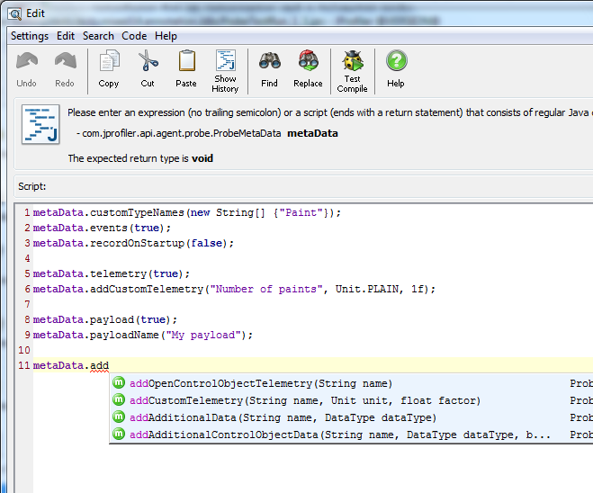

Custom Probes |
For an overview of the basic probe concepts, please see the corresponding help topic. An example for a custom probe is given in the api/samples/probe directory.
A probe is a Java class that implements one or both of the interfaces com.jprofiler.api.agent.probe.InterceptorProbe
and com.jprofiler.api.agent.probe.TelemetryProbe. Both interfaces extends the base com.jprofiler.api.agent.probe.Probe
interface which in itself is not sufficient to develop a useful probe.
Each probe is configured at startup when its getMetaData() method is called by the profiling agent.
To get a meta data instance, call com.jprofiler.api.agent.probe.ProbeMetaData#create(String name)
and continue calling configuration methods on the returned object. ProbeMetaData is a fluent interface, so you
can append calls to its methods on the same line. The information you provide at configuration time via the ProbeMetaData is
relevant when using the com.jprofiler.api.agent.probe.ProbeContext that is passed to you during data-collection time.
Several configuration methods determine the capabilities of the probe. For example,
metaData.payload(true).telemetry(true).events(true).controlObjectsView(true)
configures a probe that publishes data for all available views.
An easy way to configure an automatic telemetry is to call ProbeMetaData#addOpenControlObjectTelemetry(String name).
Custom telemetries can be configured with ProbeMetaData#addCustomTelemetry(String name, Unit unit, float factor).
Importantly for the time line and events views, you can configure custom event types with ProbeMetaData#customTypeNames(String[] names)
and assign them custom colors with ProbeMetaData#customColors(String[] names).
Events and control objects can receive additional data, which is configured with
ProbeMetaData#addAdditionalData(String name, DataType dataType) for events and
ProbeMetaData#addAdditionalControlObjectData(String name, DataType dataType, boolean nested)
for control objects.
An interceptor probe gets the opportunity to intercept selected methods. It is queried at startup
for the methods that should be instrumented and notified each time when one of those methods are called.
The interception methods are passed an instance of com.jprofiler.api.agent.probe.InterceptorContext
which contains methods to publish payload information and create events.
Because methods can be intercepted recursively,
you should use InterceptorContext#push(PayloadInfo) to save a payload in the method entry and
InterceptorContext#pop() to
retrieve it in the method exit. The payload stack is thread-local, so it also works in multi-threaded situations.
Finally you can call calculateTime() on the payload info object and publish it with
InterceptorContext#addPayloadInfo(PayloadInfo).
Control objects are registered by creating an open event with
ProbeContext#createOpenEvent(String description, Object controlObject)
and are closed by creating a close event with
ProbeContext#createCloseEvent(String description, Object controlObject)
If you have configured additional data for control objects, you create the open event with
ProbeContext#createOpenEvent(String description, Object controlObject, Object[] controlObjectData)
instead.
Custom events for particular control objects are created with
ProbeContext#createCustomEvent(String description, int type, Object controlObject).
If you do not use control objects, just pass null as the last parameter of this method.
The type ID is the index in the array argument that was passed to
ProbeMetaData#customTypeNames(String[] names) at configuration time.
If you have configured additional data for events, you supply it by calling
ProbeEvent#additionalData(Object[] additionalData) on the event.
Note that all created events have to be published by calling ProbeContext#addEvent(ProbeEvent).
A telemetry probe is called once a second via its fillTelemetryData(ProbeContext probeContext, int[] data)
method and thus periodically gets a chance to publish its telemetry data.
The indices in the data array correspond to the invocations of
ProbeMetaData#addCustomTelemetry(String name, Unit unit, float factor) in the meta-data
configuration.
Since telemetry information is not related to payloads, telemetry probes are passed an instance of
com.jprofiler.api.agent.probe.ProbeContext rather than the derived com.jprofiler.api.agent.probe.InterceptorContext
that is passed to the interception methods of telemetry probes. A probe can take both roles and implement both the
interfaces for an interceptor probe and a telemetry probe.
To manually register a probe in the profiled application, you have to create a class that implements
com.jprofiler.api.agent.probe.ProbeProvider. Its getProbes() method can
return one or several probes. Then, you have to pass the VM parameter
-Djprofiler.probeProvider=fully-qualified-class to the profiled JVM.
The probe provider is instantiated at startup.
Developing probes in an IDE, compiling them against the JProfiler API and deploying them to the profiled application together with the modification of the java command can be quite inconvenient. JProfiler offers an easier way to quickly develop and deploy custom probes without the need to use an IDE or modify the profiled application. The custom probe wizard leads you step-by step through the creation of a custom probe.
First, you define the meta data script, which is already passed an instance of com.jprofiler.api.agent.probe.ProbeMetaData.
The script editor in JProfiler offers code analysis, code completion and context-sensitive Javadoc.

Custom probes defined in the JProfiler GUI are both interceptor and telemetry probes. You can optionally define a telemetry script in the custom probe wizard.
Selecting methods for interception is also much easier in the JProfiler GUI than when writing probes manually. You just select the methods from a list of all found methods in the profiled JVM.
There are three interception scripts for method entry, exit and exception exit. You configure them for different groups of methods with the same signature. The method arguments of the intercepted method are passed to the method entry script together with the interceptor context and the current object.
If you just want to intercept a method and invoke your own code there without collecting any data, it is recommended to use a method trigger with a "Run interceptor script" action. In this way you do not have to provide the probe meta data. Also, method triggers can be added conveniently via the context menu in the call tree view.